为选择长期的季风-植被-环境综合监测断面，推动中尼双方科学家寻找共同感兴趣的合作主题与科学问题，11月6日至16日，中国科学院加德满都科教中心（以下简称“中心”）组织了对尼泊尔中部安娜普纳地区的综合野外科学考察。中心依托单位（中科院青藏高原研究所）和共建单位代表（中科院西北生态环境资源研究院、地理科学与资源研究所、植物研究所、昆明植物研究所）科学家11人，尼泊尔特里布文大学水文气象系、地理系、植物系、微生物系5位科学家组成的第一分队参加了环安娜普纳地区的联合科考。11月3日至16日，另一分队在安娜普纳Manang地区开展小冰期以来的冰川波动调查与树轮样本的采集工作。
安娜普纳地区位于尼泊尔中部，沿着南亚季风南北垂直断面，发育了亚热带至高山草甸不同植被景观，高海拔区冰川、湖泊密布，是开展综合监测研究和多圈层相互作用研究的理想区域。此次考察主路线海拔跨越700?5450m, 科考队员对沿途不同海拔梯度植被类型与物种进行了考察，每250m高程采集了表土，沿途收集了河流水体同位素样本、对冰川及冰湖进行了考察，并亲历了一次强烈的雪崩事件。此次考察期间，中尼双方科学家开展了热烈的讨论，就相关研究领域达成了合作意向，为未来国际合作项目申请、尼泊尔留学生培养和具体研究工作开展奠定了良好基础，圆满完成了各项科考目标与任务。两支科考队伍于11月9日汇合，并于11月10日一起访问安娜普纳保护区位于Manang的分部。保护区主管向科考队员详细介绍了保护区的概况，并表达了与加德满都科教中心开展长期合作研究的愿望。
11月17日至18日，在中心主任、青藏高原所所长姚檀栋和特里布文大学校长卡尼亚（Tirth Raj Khaniya）等的陪同下，中科院副院长谭铁牛、国际合作局副局长于润生、副处长蒋一琪一行视察加德满都科教中心。中心执行主任梁尔源向谭铁牛副院长一行就初步考察成果等进行了汇报。双方领导一致认为，野外科考是加强中尼科教合作的重要举措，希望今后中心更好地发挥平台支撑作用，继续组织此类中尼联合科考活动。
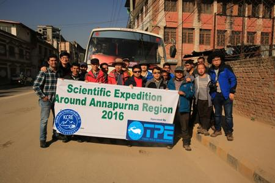
主要科考队伍于11月6日从加德满都出发
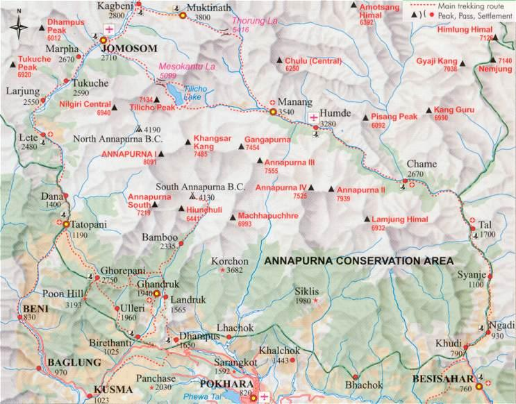
考察主要路线（虚线）
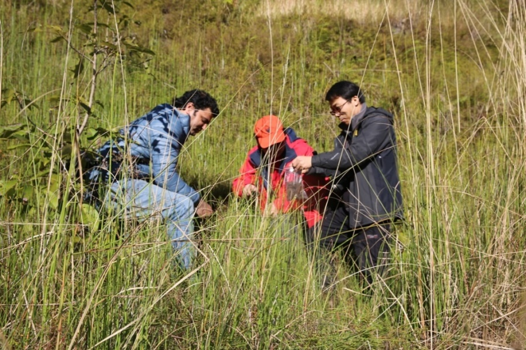
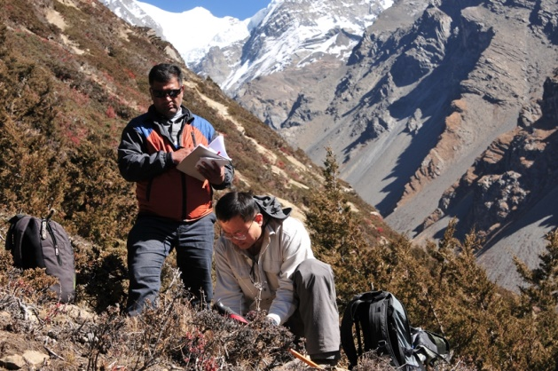
植被调查
亲历Manang地区的雪崩
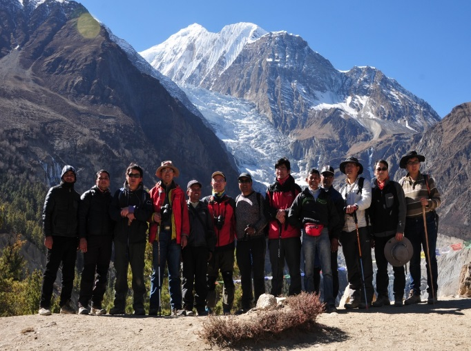
第一分队在Manang (3500m)与Yak Kharka (4000m)地区的冰川-湖泊联合考察
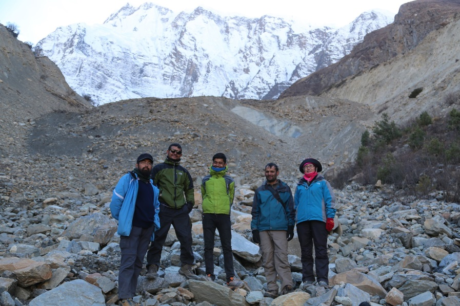
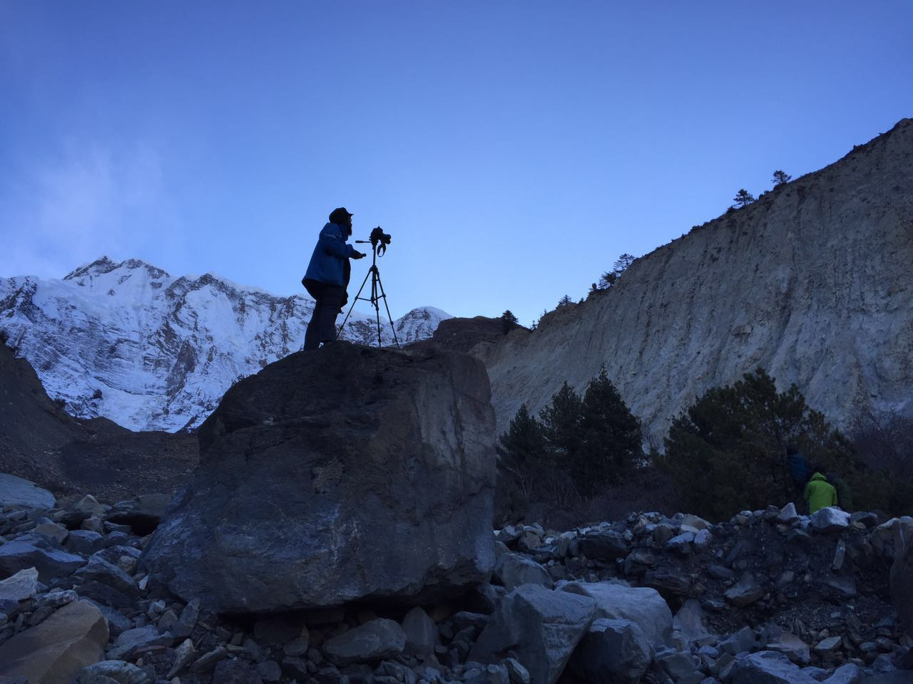
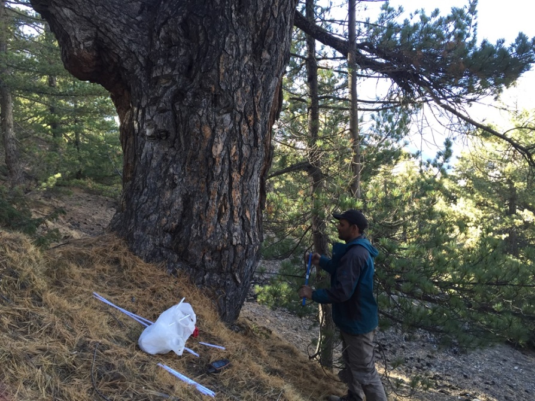
朱海峰副研究员带领另一分队在Manang地区开展为期两周的冰川波动调查与树轮样本采集工作
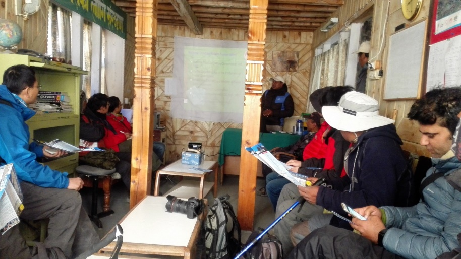
11月10日科考队员访问安娜普纳保护区位于Manang的分部
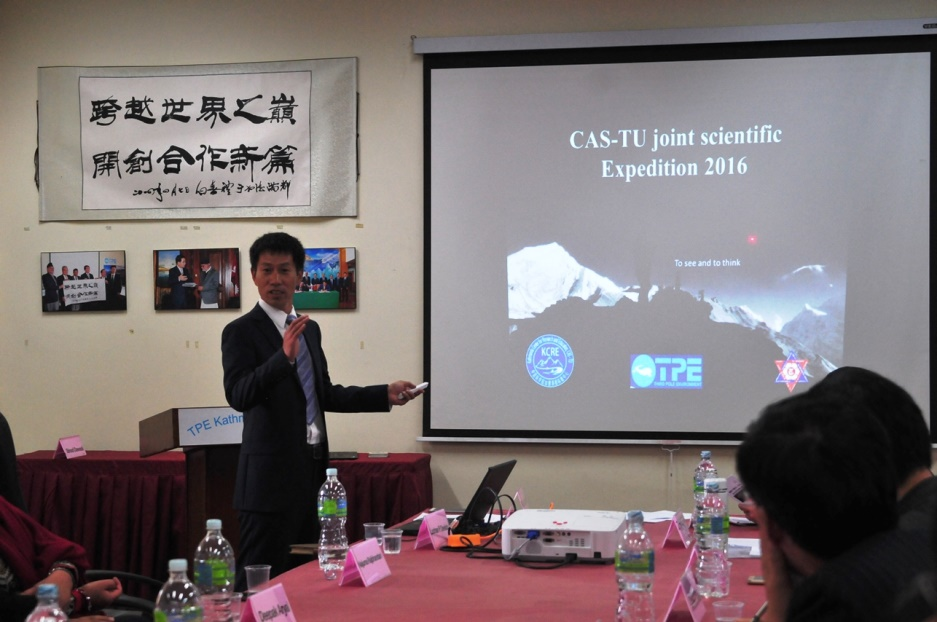
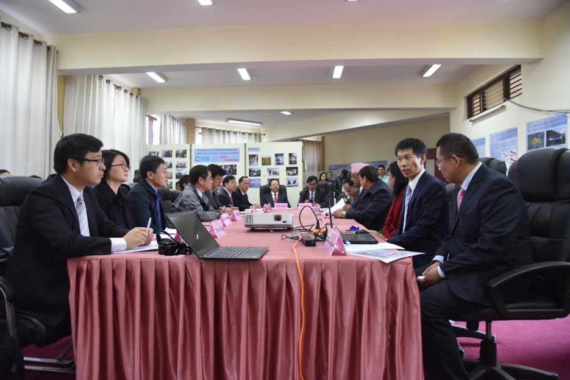
梁尔源向谭铁牛副院长一行汇报科考进展
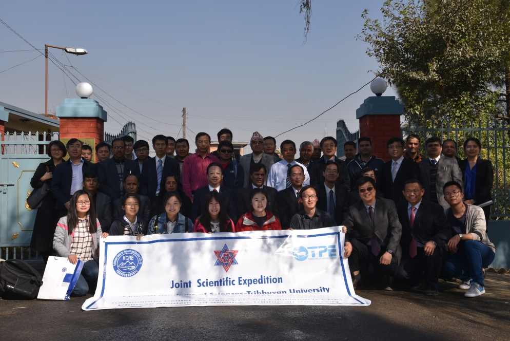
谭铁牛副院长和特里布文大学校长卡尼亚（Tirth Raj Khaniya）等会见科考队员